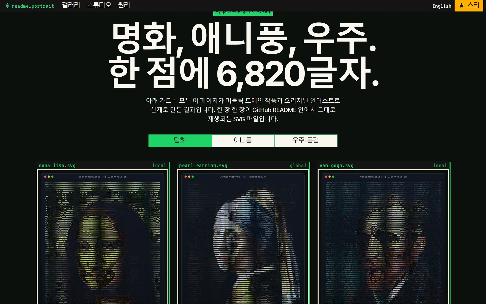
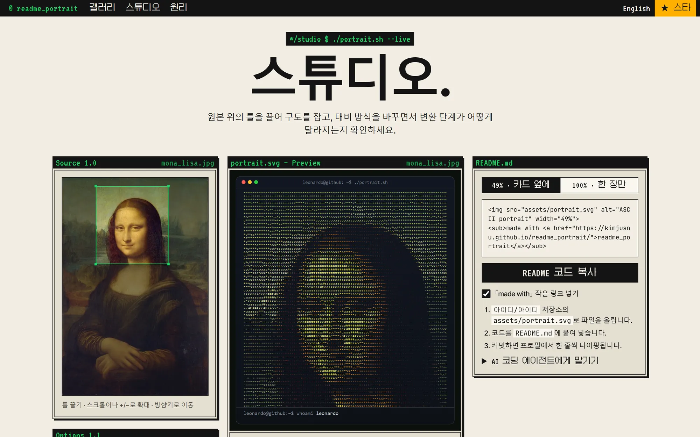
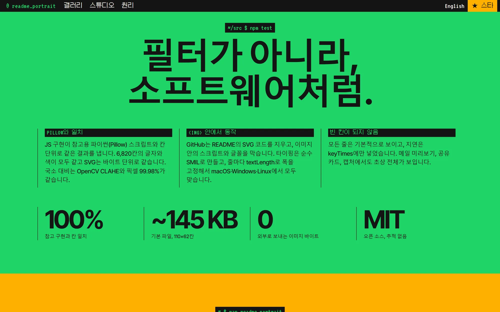

사진 한 장을, README 속 움직이는 초상으로.
사진이나 GitHub 아바타를 README에 넣는 ASCII 초상 SVG로 바꾸는 오픈소스 도구입니다. 웹 스튜디오, npm CLI, GitHub Action으로 배포했습니다.
- 담당 역할
- 기획, 디자인, 개발, 배포를 혼자 맡았습니다.
- Stack
- JavaScript · SVG(SMIL) · Node.js CLI · GitHub Actions

01 · GitHub 안에서 움직이게
README가 허용하는 것만으로 만들었습니다.
- 스크립트 없는 애니메이션 GitHub는 README 이미지에서 스크립트와 웹 글꼴을 막습니다. 타이핑 효과를 SVG 자체 애니메이션(SMIL)으로만 만들어 프로필에서 실제로 재생되게 했습니다.
- 애니메이션이 멈춰도 보이게 모든 줄은 기본으로 보이고, 애니메이션은 나타나는 시점만 늦춥니다. 메일 미리보기나 공유 카드처럼 애니메이션이 돌지 않는 곳에서도 초상이 온전히 보입니다.

02 · 스튜디오
결과가 왜 이렇게 나왔는지 보이게.
원본 위의 틀을 끌어 구도를 잡고, 대비 조정이 단계마다 어떻게 바뀌는지 나란히 확인합니다. 만든 초상은 README에 붙일 코드와 함께 바로 내려받을 수 있습니다.

03 · 배포
웹, 명령줄, 자동화 어디서든 같은 결과로.
- npm CLI 사이트와 같은 변환기를 명령줄에서 돌립니다. 예시 아바타 기준으로 CLI 결과가 브라우저 결과와 바이트 단위로 같은지 테스트로 확인합니다.
- GitHub Action 프로필 저장소에 워크플로를 넣으면 아바타가 바뀔 때 초상을 다시 그립니다.
- AI 코딩 에이전트용 스킬 Claude Code 같은 에이전트에게 부탁하면 프로필 저장소를 찾아 SVG를 만들고, 커밋 전에 확인을 받습니다.
npx readme-portrait octocat
npx readme-portrait me.jpg --style matrix --contrast local